250620科技巨头视角下的创新永不眠
半导体全景地图：把整个板块切成六大块，逐一对标海外龙头—— 算力 GPU 对标英伟达、代工对标台积电、设备对标 ASML、模拟对标德州仪器、数字 SoC 对标高通、存储对标美光。 并梳理中美对抗下国产替代的四个阶段，判断当下所处位置。
一、总览：六大板块对标海外龙头

陈老师首次系统讲半导体，把板块切成六块、每块对标一个海外龙头，判断周期位置与成长方向：
- 算力/英伟达：AI+机器人持续布局，看国产 GPU 厂商及先进封装等制造端。
- 代工/台积电：AI 芯片自主可控 + 端侧 AI，叠加工业、汽车需求复苏，大陆代工厂迎新一轮增长。
- 设备/ASML：美国制裁加码，优先关注底层硬科技——光刻机、先进封装、EDA/IP。
- 模拟/德州仪器：库存去化进入尾声，端侧 AI + 电车智能化带领下进入新一轮上行周期。
- 数字/高通：国内 SoC 摆脱下行、开启新一轮增长，AI SoC 向高效互联、专用加速、高性能计算演进。
- 存储/美光：周期上行、价格企稳；云侧 HBM 与企业级存储高增，利基存储随端侧 AI 量价齐升。
二、算力 GPU（对标英伟达）
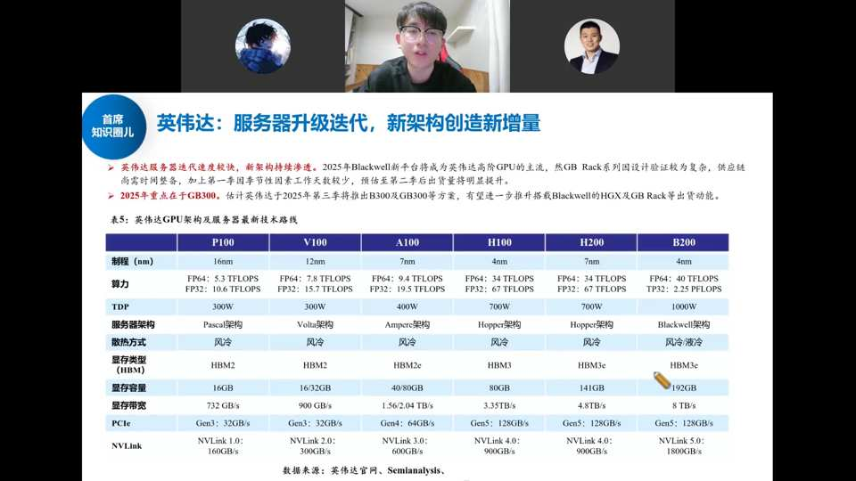
英伟达继续百倍长牛（GPU 板块海外英伟达、国内寒武纪/海光都是十倍级）。新供国内的 B20 各互联网厂测试，性能未超预期、未激烈囤卡，整体与昇腾 910C、寒武纪思元 590、海光深算三号差距不大，主要替代存量 H100。表5 列示了从 P100 到 B200 六代 GPU 的制程（16nm→4nm）、FP64/FP32 算力、TDP（300W→1000W）、显存容量（16GB→192GB HBM3e）、NVLink 带宽（160GB/s→1800GB/s）的迭代路线。
- 寒武纪：第一大客户字节（今年约 15 万片）、阿里约 5 万片，全年需求约 20 万片；但产能是瓶颈——中芯 N+2 月产能约 5000 片大头被华为包，寒武纪只拿约 1000 片。
- 海光：阿里 2–3 万片、百度约 1 万片，深算三号是 0 到 1 的一年。
- 昇腾：量大管饱，910B 四五十万片、910C 40 多万片（年初预期 70 万或下修），接近百万片需求。
- 周边：910C 是两颗 die 合封，C2C 接口 IP、合封装封测、测试难度都提升——利好 IP 公司（兴森/星源）与封测厂（长电/通富/甬矽）、测试厂（伟测/利扬）。
三、代工（对标台积电）
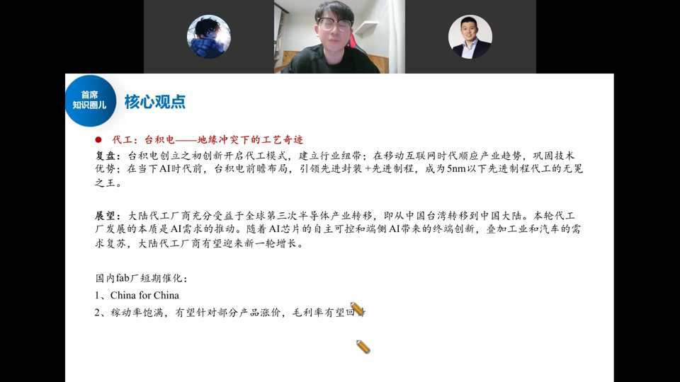
台积电三时代：PC 互联网时代 → 移动互联网时代（手机芯片制程不断缩小）→ AI 时代（云侧 GPU + 端侧 SoC/AIPC/IoT）。最大增量在 AI。
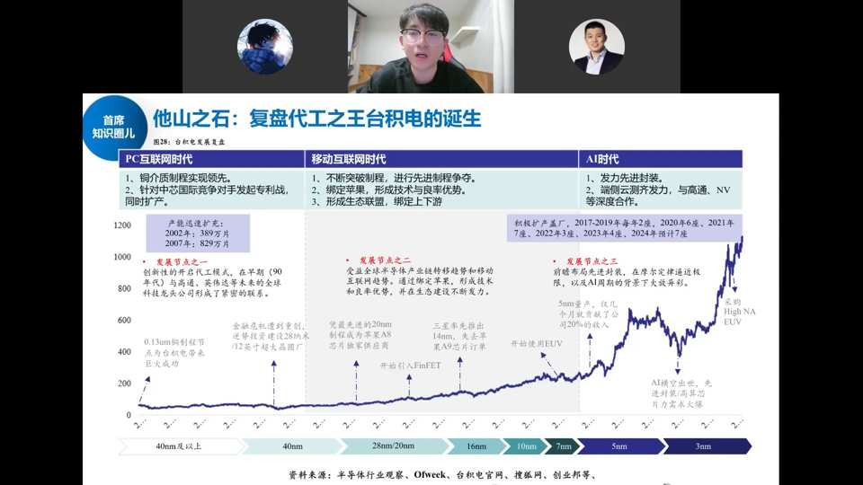
台积电创立之初创新开启代工模式，建立行业纽带；移动互联网时代顺应产业趋势、巩固技术优势（先进制程+先进封装）；AI 时代前瞻布局，成为 5nm 以下先进制程代工无冕之王。股价随制程节点（40nm→3nm）和资本开支持续走高。
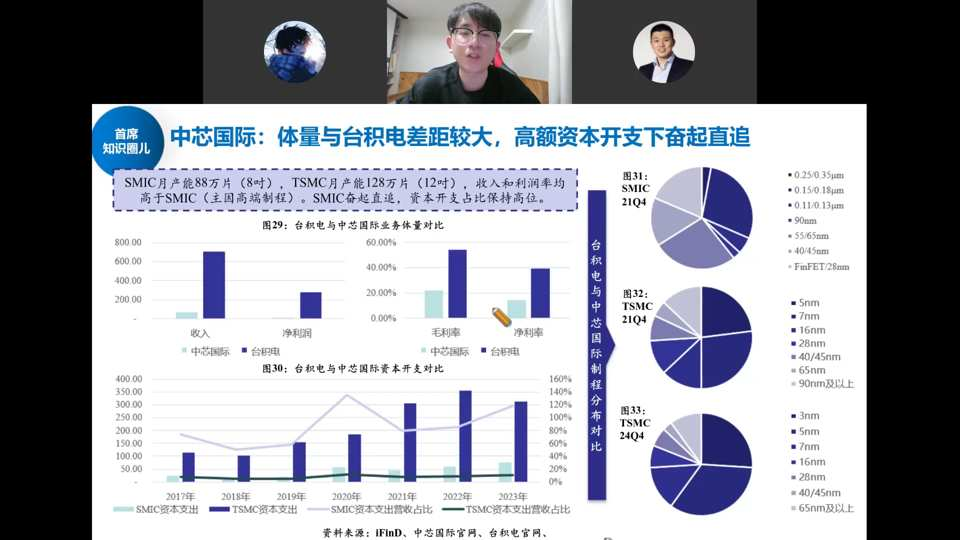
中芯国际体量与台积电差距较大：SMIC 月产能 88 万片（8寸），TSMC 128 万片（12寸），收入和利润率均高于 SMIC。SMIC 奋起直追，资本开支占比保持高位。制程分布上 SMIC 仍以 0.13μm~55/65nm 成熟制程为主，TSMC 已到 5nm~3nm。国内 IC 设计公司向中芯转移仍需时间，这正是国产替代逻辑所在。
- China for China：关税倒逼下，TI、NXP、英飞凌、意法半导体等把卖给中国的产品转到中国代工/转移产业链，中芯、华虹承接海外设计公司订单——长期趋势。
- 景气：Q1 因设备调试不顺毛利率波动，Q2 稼动饱满，华虹高压 MOS 有涨价迹象，Fab 厂毛利率回升。
- 晶合集成：特色 Fab，下游显示驱动芯片，随京东方带动国产化（合肥面板产业链聚集）。
- 封测催化：华为旗下最大封测厂盛合晶微传 IPO 加速，引爆当天板块行情。
四、设备与光刻机（对标 ASML）
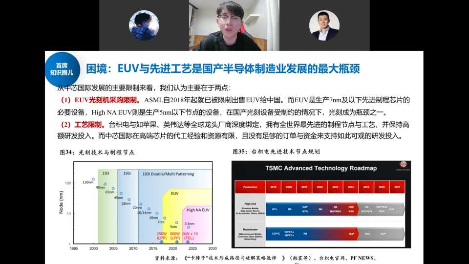
EUV 是 7nm 及以下先进制程的必要设备，ASML 被美国要求对华断供但断不干净（中国收入占比太高）。国产光刻机处于稀缺性 0 到 1 阶段。
中美对抗四阶段：① 2019 年卡华为上游芯片供应 → 催生国内 IC 设计爆发；② 卡 IC 设计公司代工 → 催生中芯/华虹等制造与封测；③ 2022 年卡设备（中芯进实体清单）→ 催生北方华创、中微等设备龙头；④ 当下第四阶段：卡零部件、EDA、IP 等底层硬科技——设备跑得再快，没有这些底层环节整条产线也跑不起来。光刻机、先进封装、EDA/IP 都在 0 到 1，弹性最大。
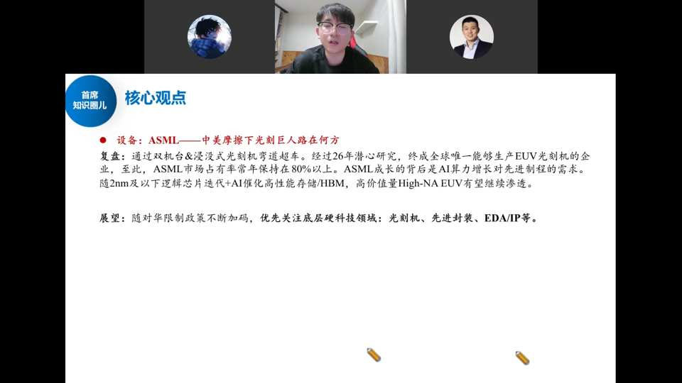
ASML 通过双工位&浸没式光刻机弯道超车，经过 26 年潜心研究成为全球唯一能生产 EUV 光刻机的企业，市场占有率常年保持 80% 以上。随 2nm 及以下逻辑芯片迭代 + AI 催化高性能存储/HBM，高价值量 High-NA EUV 有望继续渗透。
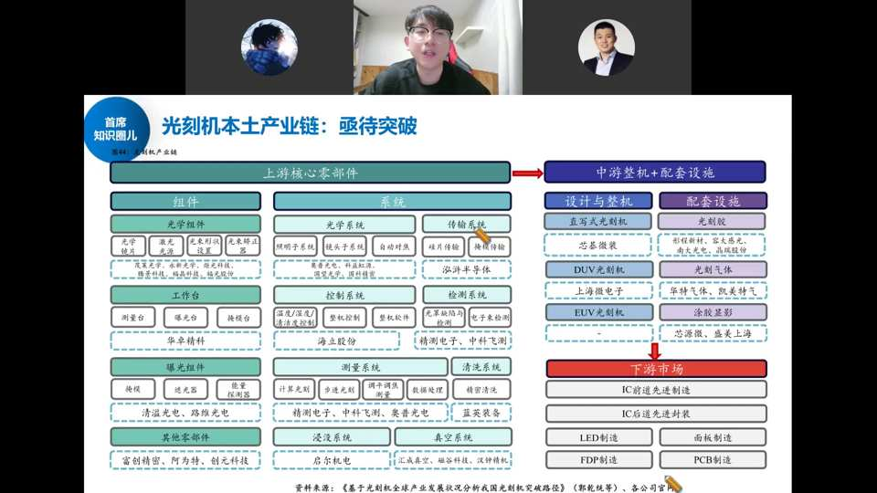
光刻机产业链全景：上游核心零部件中，光学组件与光学系统价值量最高、难度最大（照明系统、镜头系统、物镜系统等）；中游整机含直写式/DUV/EUV 光刻机（芯碁微装、上海微电子等）；下游覆盖 IC 前道/后道、LED、面板、PCB 制造。国产光刻机票偏死、无真正龙头（上海微电子、长光所未上市），偏随机属性。
五、本土制造产业链全景

从清洗、氧化加膜、光刻、涂胶显影、刻蚀、去胶、气相沉积到研磨抛光，每个环节的头部国内外厂商；三大代工厂中芯国际（逻辑/射频/高压驱动）、华虹（功率/模拟/嵌入式存储）、晶合集成（显示驱动）；封测切割/塑封/测试各环节对应公司。EDA、IP 是国产化转移中伴随发展的底层硬科技。
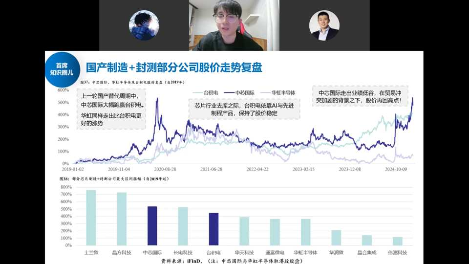
上一轮国产替代周期中，中芯国际大幅跑赢台积电，华虹同样走出比台积电更好的涨势。芯片行业去库之际，台积电依靠 AI 与先进制程产品保持股价稳定；中芯国际走出业绩低谷，在贸易冲突加剧背景下股价再回高点。区间涨幅方面，士兰微、芯原科技、中芯国际、长电科技等领涨。
六、模拟芯片（对标德州仪器）
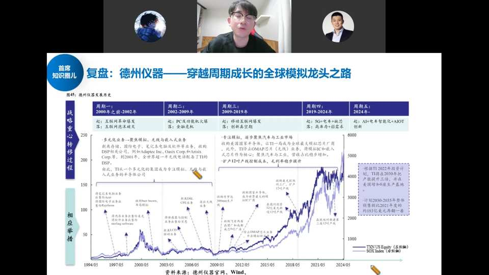
TI 是全球模拟芯片风向标。模拟经历五轮周期（互联网→PC→移动互联网→5G+IoT 缺芯，上一轮高点恐慌备货涨 10–20 倍后需求不及预期）→ 漫长去库存。TI 通过多次收购（Burr-Brown、Blackfin、National Semi、ADI 等）从元器件供应商转型为专注模拟、无线与数字嵌入式处理的半导体公司，股价长期穿越周期上行。

当前处于新一轮周期起点：① 库存去化基本结束；② 价格基本不再跌（再跌只是国内厂商互相卷）。以圣邦为例的"起承转合"：起（华为被列实体名单，TI/ADI 断供，国产切入）→ 承（疫情缺芯，备货致供不应求，加速国产替代）→ 转（需求不及预期，库存去化+内卷外卷压价）→ 合（AI+国产化）：云侧 AI 服务器电源管理芯片价值量是普通服务器的 3–10 倍；端侧 AI 带动手机/PC/可穿戴；汽车智能化带动车规模拟需求。
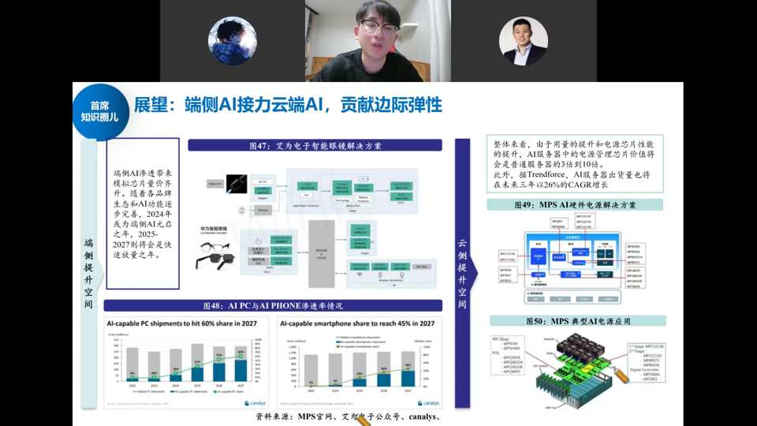
端侧提升空间：AI 渗透带来模拟芯片量价齐升，2024 年成为端侧 AI 启元年、2025-2027 快速放量。图47 艾为电子智能眼镜解决方案（单机模拟芯片价值量超 3-5 美金）；图48 AI PC 出货份额 2027 年达 60%、AI 手机达 45%；云侧提升空间：AI 服务器电源管理芯片价值量是普通服务器 3-10 倍，MPS 等受益，未来三年 AI 服务器出货量 CAGR 约 26%。
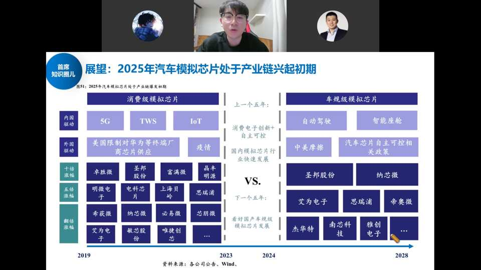
消费级模拟芯片（上一个五年：5G/TWS/IoT，国内外驱动，十倍/五倍涨幅个股如卓胜微/圣邦/纳芯微等）VS 车规级模拟芯片（下一个五年：自动驾驶/智能座舱，中美摩擦+汽车芯片自主可控政策，看好圣邦股份、纳芯微、艾为电子、思瑞浦、帝奥微、杰华特、南芯科技、雅创电子等）。汽车芯片国产化率极低（<5%），类似 18-19 年消费电子前期，中远期空间大、毛利率高，但认证周期长、导入慢。
七、数字 SoC（高通）与存储（美光）
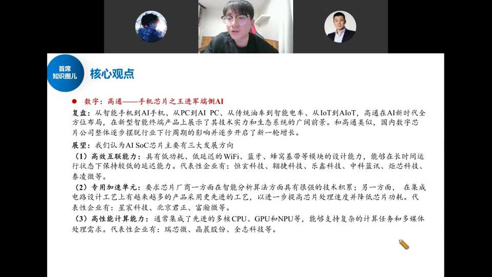
数字/高通：未来看点在端侧 AI。国内 SoC 摆脱下行、开启新一轮增长，向高效互联能力、专用加速单元、高性能计算能力发展。高通从智能手机到 AI 手机、从 PC 到 AI PC、从传统油车到智能电车、从 IoT 到 AIoT 全方位布局。
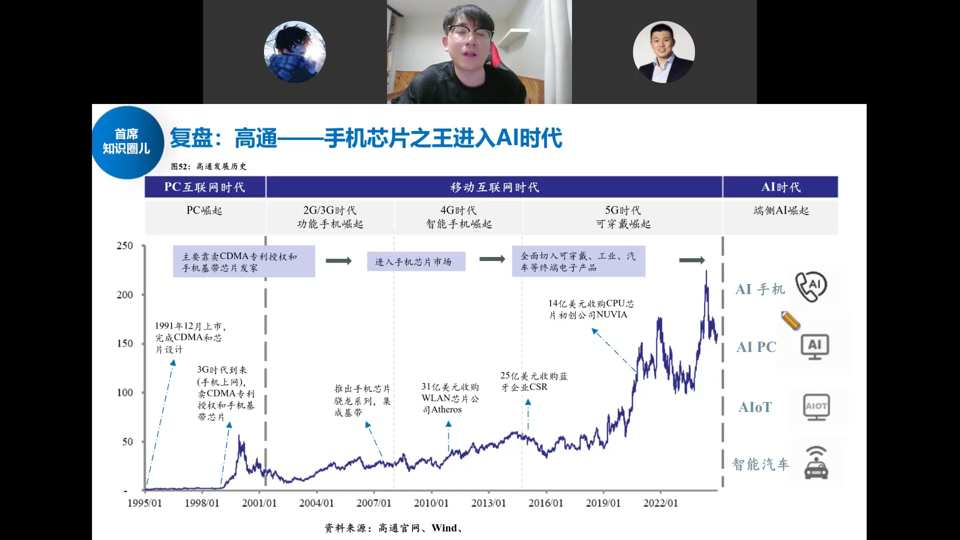
高通 1991 年完成 CDMA 芯片设计，3G 时代靠手机 CDMA 专利授权和手机基带芯片起家；后续收购 WLAN（Atheros）、CPU（Nuvia）等进入可穿戴、工业、汽车终端电子；AI 时代向 AI 手机、AI PC、AIoT、智能汽车延展。
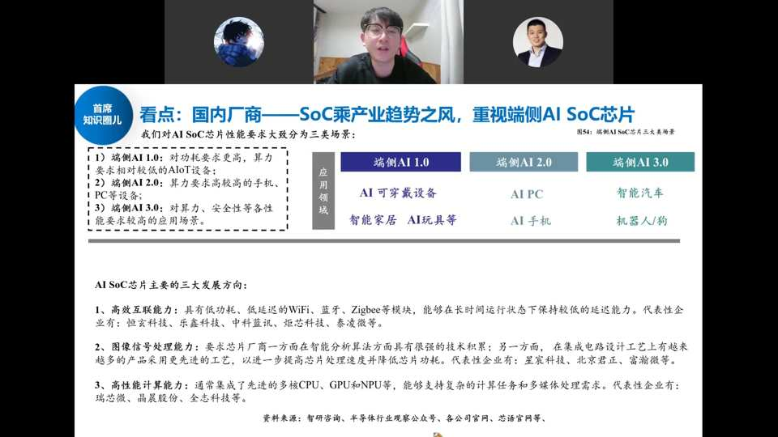
端侧 AI SoC 分三场景：AI 1.0（低功耗高算力要求的 AIoT 设备：AI 可穿戴/家居/玩具）、AI 2.0（高算力手机/PC：AI PC/AI 手机）、AI 3.0（高算力高安全性：智能汽车/机器人/狗）。三大方向：① 高效互联（恒玄/乐鑫/中科蓝讯/炬芯/泰凌微）；② 专用加速/ISP图像处理（星宸/北京君正/富瀚）；③ 高性能计算（瑞芯微/晶晨/全志）。新趋势：NPU 独立+3D DRAM 堆叠（兆易创新找瑞芯微/高通定制），类似云侧 GPU+HBM。
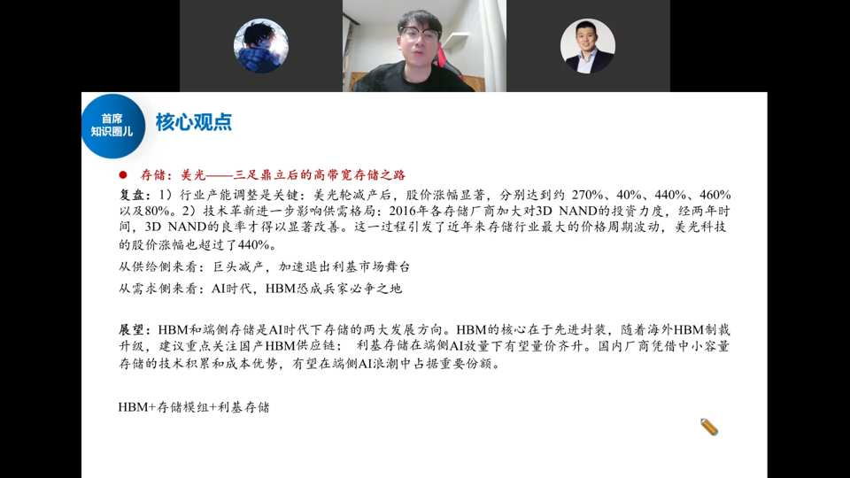
存储/美光：存储本质是接力算力——存力、算力是 AI 最大的两个硬件板块。美光轮减产后股价涨幅达 270%/40%/440%/460%/80%，技术革新（3D NAND）后股价超 440%。从供给侧看巨头减产加速退出利基市场；从需求侧看 AI 时代 HBM 成兵家必争之地。展望：HBM 和端侧存储是 AI 时代存储两大方向，HBM 核心在先进封装，利基存储在端侧 AI 放量下量价齐升。
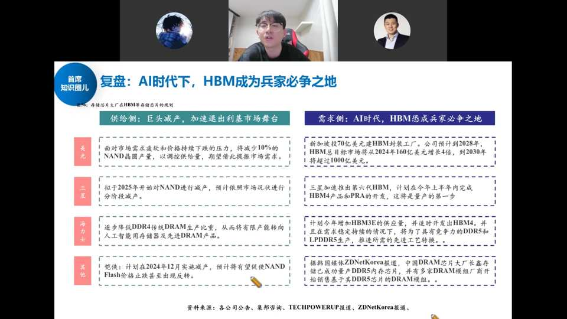
供给侧：美光面对市场需求疲软减产约 10% NAND 晶圆；三星拟 2025 年起对 NAND 减产；海力士逐步降低 DDR4 传统 DRAM 比重转向 AI 存储和先进 DRAM；铠侠 2024 年 12 月实质减产。需求侧：新加坡投 70 亿美元建 HBM 封装厂（2028 年 HBM 总目标市场 160 亿→4 倍→2030 年超 1000 亿美元）；三星推进第六代 HBM；计划增加 HBM3E 供应并开发 HBM4/LPDDR5X。中国 DRAM 大厂长存/长鑫已成功量产 DDR5。
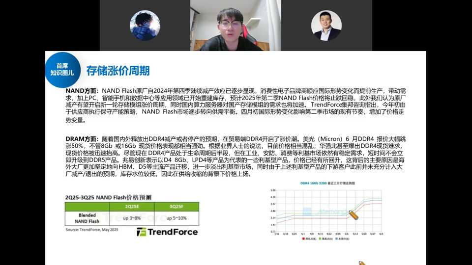
NAND Flash：原厂 2024Q4 起减产效果显现，消费电子品牌提前生产带动需求，PC/手机/数据中心重建库存，预计 2025Q2 NAND 价格止跌回升。DRAM：海外释放 DDR4 减产/停产预期，美光 6 月 DDR4 报价大涨 50%，华强北爆出 DDR4 现货难求。华邦电等将产能转向 HBM/D5，利基型产品价格回补。TrendForce 预测 2025E NAND 涨 3-8%、3Q5F 涨 5-10%。
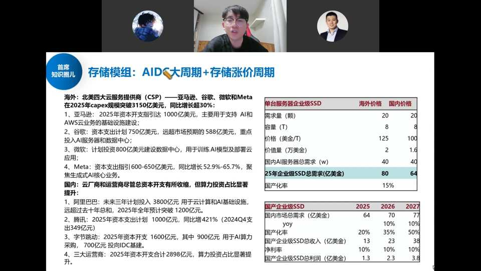
存储模组处于双重周期叠加：① 涨价周期；② AIDC 大周期。海外北美四大 CSP（亚马逊/谷歌/微软/Meta）2025 年 capex 突破 3150 亿美元（同比增超 30%）；国内阿里未来三年 3800 亿、腾讯 1000 亿（+421%）、字节 1600 亿、三大运营商 2898 亿。企业级 SSD/内存条需求高增，单台服务器企业级 SSD 价值量约 2 万美金（海外）/1.6 万美金（国内），国内 AI 服务器年需求约 40 万台，对应企业级 SSD 总需求约 80 亿美金，国产化率仅 15%。国内厂商（德明利/江波龙/百维存储）开始拿到份额，过去做消费级模组的厂商切入企业级蓝海。
一张图记住：算力（GPU）看国产替代与先进封装，代工看 China-for-China 与稼动/涨价，设备/光刻机/EDA/IP 是 0 到 1 弹性最大的底层硬科技，模拟在周期底部、AI+汽车抬升价值量，存储接力算力向上。风险：中美摩擦升级、AI 与市场需求不及预期、经济复苏不及预期。